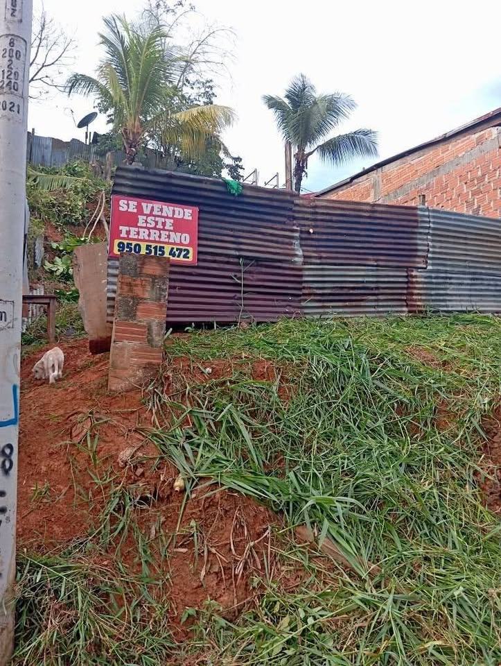

Precio desconocido 1.466 ha

Se vende un terreno acá en yurimaguas, que queda en las américas, frente al pasaje 14 de febrero MZB LT20, que tiene una extensión superficial de 146.55m², el interesado llamar a este número [hidden information]